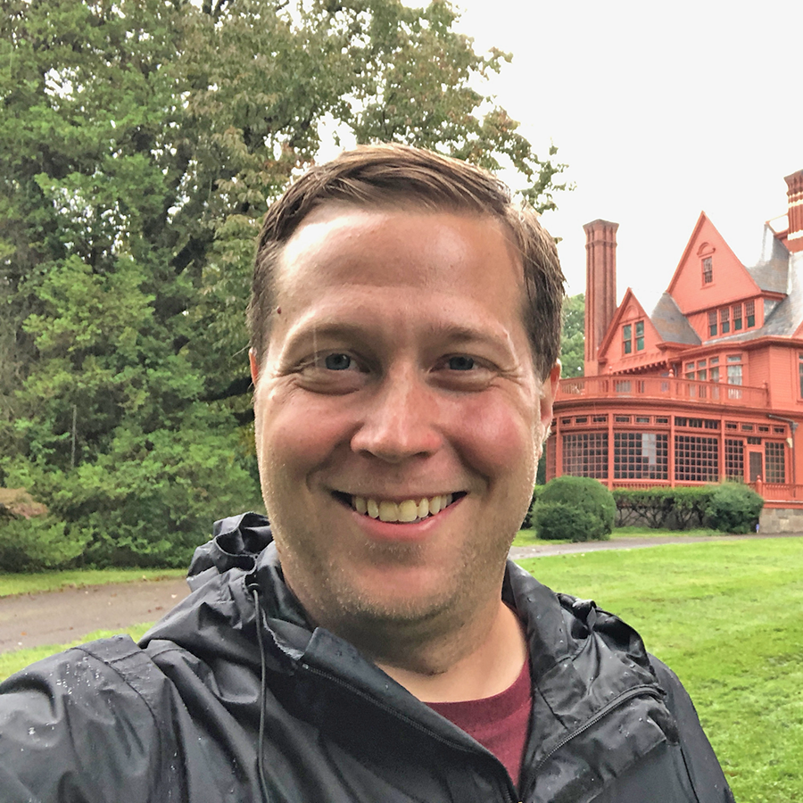
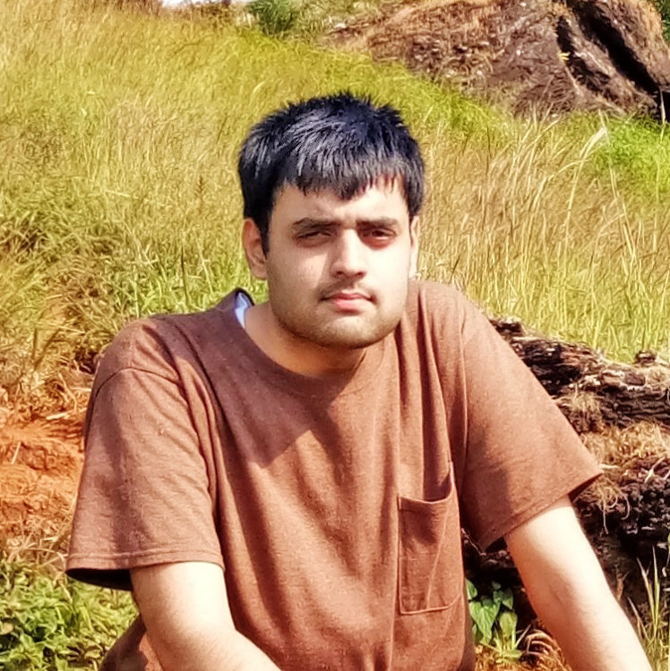
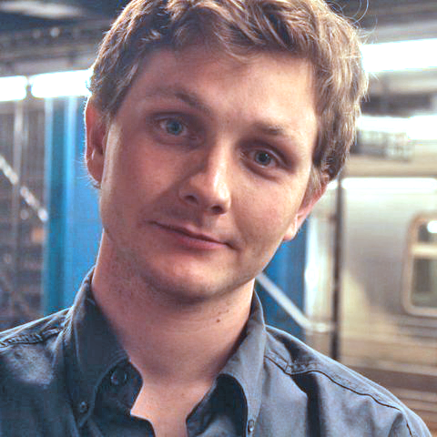

Trainees

Logan Becker
lbecker95@utexas.edu
PhD student · Dept. of Neuroscience · Taillefumier lab
PhD student · Dept. of Neuroscience · Taillefumier lab
computational modeling · neural dynamics · statistical neuroscience

Giulia Berto
giulia.berto@austin.utexas.edu
PostDoc · Dept. of Psychology · Pestilli lab
Publications
PostDoc · Dept. of Psychology · Pestilli lab
Publications
neuroimaging · machine learning · data science

Zoe Boundy-Singer
zoebsinger@utexas.edu
PhD student · Dept. of Neuroscience · Goris lab
Publications
PhD student · Dept. of Neuroscience · Goris lab
Publications
electrophysiology · computational modeling · visual perception · confidence

Christine Coughlin
cacoughlin@utexas.edu
PostDoc · Dept. of Psychology · Preston lab
Website · Publications
PostDoc · Dept. of Psychology · Preston lab
Website · Publications
neurocognitive development · episodic memory · episodic future-thinking · learning · neuroimaging

Abhranil Das
abhranil.das@utexas.edu
PostDoc · Dept. of Psychology · Geisler lab
Website · Publications
PostDoc · Dept. of Psychology · Geisler lab
Website · Publications
physics · vision science · computational neuroscience · psychedelic science

Meg Donahue
mmdonahue@utexas.edu
PhD student · Dept. of Neuroscience · Colgin lab
PhD student · Dept. of Neuroscience · Colgin lab
electrophysiology · hippocampus · spatial cognition

Antonio Fernández
antonio.fernandez@utexas.edu
PostDoc · Dept. of Psychology · Pestilli lab
Website · Publications
PostDoc · Dept. of Psychology · Pestilli lab
Website · Publications
covert attention · computational neuroscience · neuroimaging

Anibal Sólon Heinsfeld
anibalsolon@utexas.edu
PhD student · Dept. of Computer Science · Pestilli lab
Website · Publications
PhD student · Dept. of Computer Science · Pestilli lab
Website · Publications
deep learning · brain imaging · open science

Satwant Kumar
satwant.dagar@gmail.com
PostDoc · Dept. of Psychology · Seidemann lab
Website · Publications
PostDoc · Dept. of Psychology · Seidemann lab
Website · Publications
systems neuroscience · computational vision · vision neuroscience

Dylan Le
dylanle@utexas.edu
PhD student · Dept. of Neuroscience · Wei lab
PhD student · Dept. of Neuroscience · Wei lab
computational neuroscience · spatial coding · cognitive maps · topology
Salim M'jahad
mjahad@utexas.edu
PhD student · Dept. of Neuroscience · Seidemann lab
PhD student · Dept. of Neuroscience · Seidemann lab
visual perception · systems neuroscience · computational neuroscience · optogenetics · optical imaging

Neal W Morton
neal.morton@austin.utexas.edu
Research Associate · Dept. of Neuroscience · Preston lab
Website · Publications
Research Associate · Dept. of Neuroscience · Preston lab
Website · Publications
episodic & semantic memory · computational modeling · neuroimaging

Andrea Nam
ajnam@utexas.edu
PhD student · Dept. of Neuroscience · Harris lab
PhD student · Dept. of Neuroscience · Harris lab
astrocytes · 3DEM · computational modeling

Ronan O'Shea
ronan_oshea@utexas.edu
PhD student · Dept. of Psychology · Nauhaus and Wei labs
Publications
PhD student · Dept. of Psychology · Nauhaus and Wei labs
Publications
vision · imaging · neural network models

Katy Pilarzyk
kpilarzyk@utexas.edu
PostDoc · Dept. of Neuroscience · Harris lab
Publications
PostDoc · Dept. of Neuroscience · Harris lab
Publications
neuroscience · learning & memory · synaptic plasticity

Jayanth R T
jayanth.r.t@utexas.edu
PhD student · Dept. of Electrical & Computer Engineering · Colgin and Millan Labs
Website · Publications
PhD student · Dept. of Electrical & Computer Engineering · Colgin and Millan Labs
Website · Publications
spatial cognition · hippocampus · real-time decoding · computational modeling

Jason Samonds
samondjm@gmail.com
Research Associate · Dept. of Neuroscience · Priebe lab
Website · Publications
Research Associate · Dept. of Neuroscience · Priebe lab
Website · Publications
visual cortex · neurophysiology · inference · stereopsis · eye movements · autism

Pin Kwang 'PK' Tan
pktan.hq@gmail.com
PhD student · Dept. of Neuroscience · Seidemann lab
Website · Publications
PhD student · Dept. of Neuroscience · Seidemann lab
Website · Publications
visual perception · optical imaging · optogenetics · computational neuroscience

Zhongxuan Wu
zhongxuanwu@utexas.edu
PhD student · Dept. of Neuroscience · Wei lab
PhD student · Dept. of Neuroscience · Wei lab
spatial navigation · cognitive function · computational modeling

Liu Yuezhang
lyz@utexas.edu
PhD student · Dept. of Neuroscience
Website · Publications
PhD student · Dept. of Neuroscience
Website · Publications
computational neuroscience · deep reinforcement learning · memory
Anqi Zhang
anqizhang@utexas.edu
PhD student · Dept. of Physics · Geisler lab
Website · Publications
PhD student · Dept. of Physics · Geisler lab
Website · Publications
vision science · statistical physics · computational neuroscience

Corey Ziemba
ziemba@utexas.edu
PostDoc · Goris lab
Publications
PostDoc · Goris lab
Publications
computational neuroscience · visual perception · decision-making